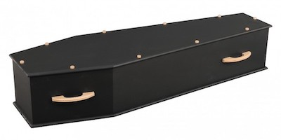
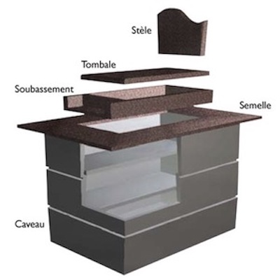
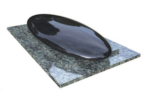
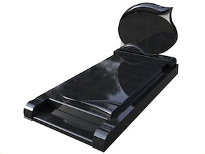
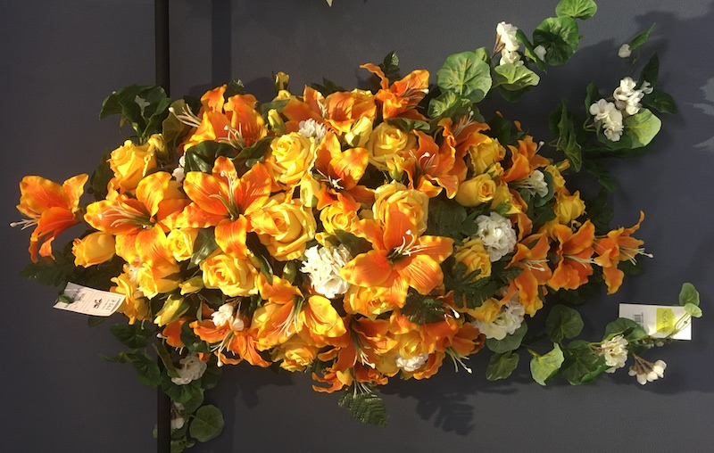
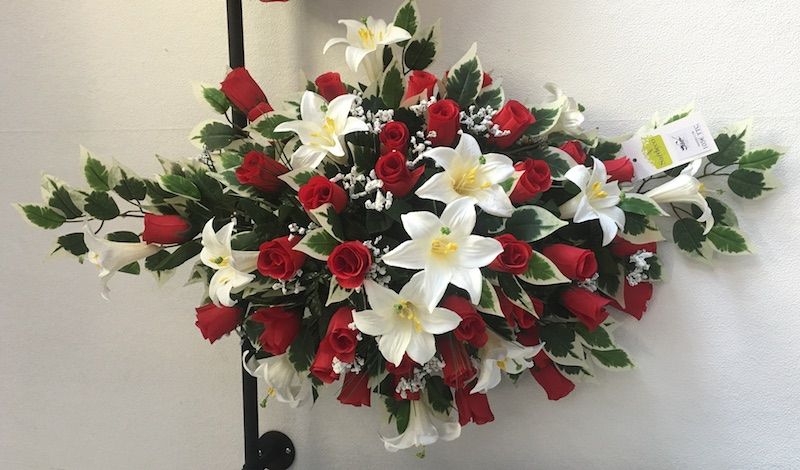

Pompes Funèbres Metz Sablon : 25 rue Lothaire 57000 METZ

Pompes Funèbres Metz Sablon : 25 rue Lothaire 57000 METZ

Pompes Funèbres Metz Sablon : 25 rue Lothaire 57000 METZ

Pompes Funèbres Metz Sablon : 25 rue Lothaire 57000 METZ

Pompes Funèbres Metz Sablon : 25 rue Lothaire 57000 METZ

Pompes Funèbres Metz Sablon : 25 rue Lothaire 57000 METZ
Pompes Funèbres Metz Sablon : 25 rue Lothaire 57000 METZ
Pompes Funèbres Metz Sablon : 25 rue Lothaire 57000 METZ
CONTACT : |
|
|---|---|
|
Appelez-nous : |
03 87 38 11 20 |
|
Ecrivez-nous : |
|
|
Prenez rendez-vous : |
25 rue Lothaire 57000 METZ |
|
Horaires d'ouverture : |
du lundi au samedi : de 9h à 12h et de 14h à 18h. les nuits, dimanches et jours fériés : urgence décès au 03 87 38 11 20 |
Qui sommes-nous :
À votre écoute depuis 2012, les Pompes Funèbres WEBER s'engagent à assurer un service respectueux, en toute discrétion et dans la plus grande dignité :
- Une entreprise à taille humaine.
- Un accueil chaleureux.
- Un hommage personnalisé.
- Des prestations s'adaptant à votre budget.
- Une capacité d'intervention rapide.
- Une chambre funéraire au cœur de Metz : 25 rue Lothaire 57000 METZ.
- Le respect de vos convictions religieuses.
- Les rapatriements à l'étranger, dans le monde entier.
- Le tiers payant avec les mutuelles.
- Du personnel formé et compétent.
- Des produits et services innovants et personnalisés (gamme écologique...).

Nous nous occupons de tout.
Notre équipe de professionnels vous accompagne dans chaque étape de l'organisation des obsèques :
- les démarches et formalités administratives.
- les soins de conservation ou la toilette et l'habillage du défunt.
- le choix de la chambre funéraire (en fonction des volontés de la famille).
- la parution d'avis de décès dans la presse locale (Républicain Lorrain).
- la prestation de maître de cérémonie pour vous guider le jour des obsèques.
- Les fleurs artificielles, fabriquées en France et pouvant être réalisées selon vos choix.
- Les plaques en granit pouvant être personnalisées par des gravures ou des inscriptions sur des inters.
- La réalisation de gravures en extérieur et la pose de lettres en bronze.
- La réalisation de médaillons en porcelaine et la pose au cimetière.
- La conception et l'impression de faire-parts de remerciements.

Corbillards et équipe

Cercueils
Nous vous proposons une gamme de cercueils fabriqués en France, du plus simple au plus travaillé, dans des bois massifs. Vous aurez également le choix d'une gamme étoffée de capitons et d'emblèmes religieux ou civil.
Depuis peu le cercueil Éole est entré dans notre gamme. En carton alvéolé avec un placage bois, il répond à la législation et permet la crémation.
NOUVEAUTÉ: Le cercueil Ardoise en pin massif, pour que les petits et les grands laissent un dernier message en hommage au défunt:

Depuis peu le cercueil Éole est entré dans notre gamme. En carton alvéolé avec un placage bois, il répond à la législation et permet la crémation:

Le pack crémation NEVIS: un cercueil gris clair en pin massif, son capiton en coton et une urne en Aulne, un hommage élégant et naturel:
L'Améthyste: un cercueil foncé en chêne massif, pour un hommage moderne:

Et bien sûr, vous trouverez en agence des modèles plus classiques.
Chambre Funéraire WEBER
Pour permettre aux familles de se recueillir avant la cérémonie, il est possible de transférer le défunt dans notre chambre funéraire située 25 rue Lothaire à METZ (Sablon).
Ces salons sont privatifs, climatisés et accessibles 24H/24 à l'aide d'un digicode. Ils sont divisés en deux, un espace de convivialité et un espace propice au recueillement.
La cloison décorative préserve les plus sensibles. En effet, elle masque la vue du défunt afin qu'ils puissent se recueillir dans la même pièce que lui.
Sur la console, nous installons un registre de condoléances et personnalisons le salon avec des photos que la famille nous confie.
Une enceinte portable est disponible à l'agence pour diffuser la musique de votre choix. Enfin, une machine à café Nespresso est à votre disposition dans chaque salon.

Crémation
Nous travaillons en collaboration avec tous les crématoriums de la région.
Nous vous proposons des cérémonies civiles tenues par le personnel du crématorium, un maître de cérémonie ou une bénédiction par un officiant religieux (Diacre, Moine bouddhiste, Pasteur...).
À l'issue de cette cérémonie, il vous sera possible d'organiser une collation dans l'espace de convivialité du Crématorium prévu à cet effet.
La Destination des cendres:
- L'inhumation dans une sépulture familiale,
- Le scellement sur un monument de famille,
- l'inhumation dans un cavurne (monument cinéraire 1mx1m),
- La dispersion des cendres dans un jardin du souvenir,
- La dispersion des cendres en pleine nature.
- l'inhumation dans un columbarium.
Urne en cuivre et décor en laiton.
Urne en cuivre et décor en laiton.
Urne biodégradable avec décor en éléments Swarovski.
Urne en verre blanc décor en métal.

Urne biodégradable en terre.

Urne cube.
Urne en bambou laqué.
Urne en résine.
Urne cube.

Urne en albâtre.

Urne en céramique.
Urne en albâtre.

Urne papillon en résine.
Urne larma en résine.
Urne carré bleue.
Marbrerie Funéraire à Metz
Nous réalisons vos caveaux et monuments funéraires selon vos volontés, du plus classique au plus contemporain, dans une large gamme de granit.
Nous réalisons également:
- les monuments cinéraires (1mx1m),
- la gravure ou la pose de lettres ou ornements en bronze.
- Études et devis gratuits.
Les différentes parties d'un monument funéraire:

Exemple de monument proposé:



Quelques unes de nos réalisations:
Monument en granit Mass Blue - Marbrerie Metz
Monument doucine chanfreinée galbée granit Noir d'Afrique - Marbrerie Metz

Monument doucine chanfreinée galbée granit Rose Lila - Marbrerie Metz

Monument simple, dallage et tombale en noir d'Afrique - Marbrerie Metz
Monument doucine chanfreinée galbée granit Labrador bleu HQ - Marbrerie Metz

Monument stèle basse moderne avec croix taillée dans la masse en granit Noir d'Afrique - Marbrerie Metz
Monument doucine chanfreinée galbée en Tarn moyen - Marbrerie Metz
Monument simple, dallage en granit Mass Blue et opus blanc - Marbrerie Metz
Monument en granit noir d'Afrique sans tombale, avec opus blanc - Marbrerie Metz
Monument en granit Mass Blue avec prie Dieu et soubassements - Marbrerie Metz

Monument cinéraire, en granit Noir fin et Mass Blue- Marbrerie Metz
Monument simple, dallage en granit Rose Lilas et opus blanc - Marbrerie Metz
Entretien de Sépulture à Metz et en Moselle
Vous habitez loin, vous n'avez pas le temps ou n'êtes pas équipé pour entretenir la sépulture de vos proches, faites appel à un professionnel.
Nous avons mis en place un service d'entretien de sépulture et de fleurissement, avec envoi de photo "avant-après" par mail.
- Nous intervenons rapidemment,
- Dans tous les cimetières messins et alentours,
- Monument simple en granit: 65 € l'intervention,
- Monument en pierre ou avec calvaire: sur devis,
- Pour recevoir notre formulaire, vous pouvez nous envoyer un mail à cette adresse: gml.weber@gmail.com .


Pack Obsèques: comment ça marche?
Concrètement, il s’agit d’un contrat d’assurance vie, souscrit auprès d’un assureur, qui garantit le versement du capital prévu au bénéficiaire désigné, pour financer les frais d’obsèques.
Pour être certain que vos volontés seront bien respectées, vous pouvez souscrire un contrat d’assurance obsèques en prestations. Dans ce cas, c’est l’opérateur funéraire désigné au contrat, qui reçoit le capital et prend en charge l’organisation des obsèques selon vos instructions inscrites au contrat, ainsi que toutes les démarches administratives.
Il est bon de savoir que le coût d’une inhumation est estimé à environ 4 000 euros, ce montant pouvant évoluer à la hausse comme à la baisse selon les régions. C’est pourquoi, il est important de se faire assister d’un professionnel du funéraire pour tarifer le juste coût des prestations. Ainsi vous pourrez prévoir le capital nécessaire à garantir dans le contrat d’assurance obsèques. Vous avez le choix entre plusieurs modes de versements : prime unique, primes temporaires ou primes viagères.
Le régime fiscal appliqué est celui de l’assurance vie, c'est-à-dire que le capital accumulé dans le contrat obsèques est totalement exonéré d’impôt dans la limite de 152 500 euros.
8 Bonnes raisons de prévoir ses obsèques :
- 1. GARDER L’ESPRIT LIBRE: Envie d’être tranquille, ne plus y penser et être rassuré de savoir que tout est prévu.
- 2. LE RESPECT DE VOS DERNIÈRES VOLONTÉS: Vous tenez à ce que tout se déroule comme vous l’avez choisi.
- 3. PROTÉGER CEUX QUI RESTENT: Organiser ses obsèques à l’avance, c’est libérer vos proches de tous soucis matériels et financiers. Ils recevront le capital constitué hors droits de succession.
- 4. UNE ÉPARGNE SÛRE: Le capital ou les primes que vous avez versés sont placés sur un contrat d’assurance qui garantit votre épargne.
- 5. UNE REVALORISATION DE CAPITAL CHAQUE ANNÉE: Le contrat prévoit également une revalorisation annuelle de votre épargne
- 6. LA LIBERTÉ DU MODE DE PAIEMENT: Vous avez le choix entre une cotisation unique qui constitue le capital, ou des versements périodiques temporaires, viagers ou libres.
- 7. LE MAINTIEN DES GARANTIES ET DES COTISATIONS: A la souscription du contrat, vous prévoyez le montant du capital nécessaire et vous êtes certain que vos cotisations n’augmenteront pas.
- 8. UNE GARANTIE IMMÉDIATE: Votre contrat prend effet dès la souscription, sans délai d’attente, si vous êtes en bonne santé.
Les Fleurs Artificielles

Egayer la tombe d’un proche constamment n’est pas un exercice facile. Les conditions météorologiques compliquent encore plus les choses et les cimetières n’offrent pas les conditions de vie les mieux adaptées aux fleurs. Ainsi, le fleurissement des tombes a souvent lieu à des dates bien précises, généralement le jour de la toussaint et lors des anniversaires.

Certaines personnes restent très réticentes car elles préfèrent les fleurs naturelles. Sachez toutefois, que de plus en plus de personnes en recours aux artificielles car elles ont une durée de vie presque illimitées. Elles résistent aux intempéries et n’ont pas besoin de conditions spéciales pour survivre.
La technique de réalisation des fleurs artificielles s’est tellement développées que de nos jours les artificielles ressemblent étonnamment aux naturelles. Chaque saison, nous vous proposons de nouveaux thèmes avec des compositions réalisées artisanalement. Nous réalisons également des compositions personnalisées sur commande.
Les Plaques Personnalisées

Nous réalisons des gravures sur plaques en 24H, tous les projets sont envisageables.
Nos gravures sont réalisées à l'or 22 carats ou en blanc. Nous vous proposons des devis gratuits avec maquettes.
Voici un exemple d'une gravure sur coeur bombé en granit noir fin, avec incrustation de cristaux.

Les plaques en altuglass personnalisables, avec texte et photo, sont disponibles en agence en 72H.